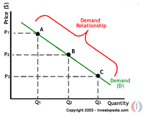

In every area of human enterprise and endeavor, there's a big picture and a little picture, the macro and the micro. The macro looks at things through a wide-angle lens; the micro looks at things through a narrow-focus lens.
This is also true in economics and its two branches, macroeconomics and microeconomics.
Macroeconomics studies large-scale phenomena in the national economy, and even in global economies, because they're interrelated. These would include central bank interest rates, national employment numbers, gross national product figures, trade deficits or surpluses, foreign currency exchange rates, and other major economic activity and data.
By contrast, microeconomics studies a limited, smaller area of economics, including the actions of individual consumers and businesses, and the process by which both make their economic decisions – buying, selling, the prices businesses charge for their goods and services and how much of these goods and services they produce and or offer.
Microeconomic study reveals how start-up businesses have determined the competitively successful or unsuccessful pricing of their goods and services based on consumer needs and choices, market competition and other financial and economic formulas.
Microeconomics also studies supply-demand ratios and its effect on consumer spending and business decision-making.
At the heart of consumer purchasing is the concept of utility, a classic economic idea. Utility is the term applied to a consumer's satisfaction after the purchase of some product or service. Because a consumer's feeling of satisfaction may be impossible to precisely quantify in actual numbers, the concept may seem impractical. But a reasonably close approximation is useful to businesses, and may also be useful to the individual consumer who can probably measure that feeling of satisfaction with a "gut" reaction.
These concepts are explained in the following tutorial on microeconomics. The information is both practical and theoretical, and fascinating as well. It will provide the reader with a big picture of small picture economics.
As early as the 18th century, economists were studying the decision-making processes of consumers, a principal concern of microeconomics. Swiss mathematician Nicholas Bernoulli (1695-1726) proposed an extensive theory of how consumers make their buying choices in what was perhaps the first written explanation of how this often mysterious and always complex process works.
According to Bernoulli's theory, consumers make buying decisions based on the expected results of their purchases. Consumers are assumed to be rational thinkers who are able to forecast with reasonable accuracy the hopefully satisfactory consequences of what they buy. They select to purchase, among the choices available, the product or service they believe will provide maximum satisfaction or well-being.
For some 200 years beginning in the mid-1700s, the dominant economic theory was Adam's Smith's laissez-faire (French for "leave alone" or "let do") approach to the economy, which advocated a government hands-off policy regarding free markets and the machinery of capitalism. The laissez-faire theory argues that an economy functions best when the "invisible hand" of self-interest is allowed to operate freely, without government intervention.
Smith and Marshall
Scottish-born Smith (1723-1790) wrote in his book, "Wealth of Nations," that if the government does not tamper with the economy, a nation's resources will be most efficiently used, free-market problems will correct themselves and a country's welfare and best interests will be served. (For further reading on Adam Smith see, Adam Smith: the Father of Economics.)
Smith's views on the economy prevailed through two centuries, but in the late 19th and early 20the century, the ideas of Alfred Marshall (1842-1924), a London-born economist, had a major impact on economic thought.
In Marshall's book, "Principles of Economics, Vol. 1." published in 1890, he proposed, as Bernoulli had three centuries earlier, the study of consumer decision making. Marshall proposed a new idea as well - the study of specific, individual markets and firms, as a means of understanding the dynamics of economics. Marshall also formulated the concepts of consumer utility, price elasticity of demand and the demand curve, all of which will be discussed in the following chapter.
Keynes
At the time of Marshall's death, John Maynard Keynes (1883-1946), who would become the most influential economist of the 20th century starting in the 1930s, was already at work on his revolutionary ideas about government management of the economy.
Born in Cambridge, England, Keynes' contributions to economic theory have guided the thinking and policy-making of central bankers and government economists for decades, both globally and in the U.S. (To learn more see, Can Keynesian Economics Reduce Boom-Bust Cycles?)
So much of U.S. monetary policy, the setting of key interest rates, government spending to stimulate the economy, support of private enterprise through various measures, tax policy and government borrowing through the issuance of Treasury bonds, bills and notes, have been influenced by the revolutionary ideas of Keynes, which he introduced in his books and essays.
What all these concepts had in common was their advocacy of government management of the economy. Keynes advocated government intervention into free markets and into the general economy when market crises warranted, an unprecedented idea when proposed during the Great Depression. (For more on this read, What Caused The Great Depression?)
Government spending to stimulate an economy, a Keynesian idea, was used during the Depression to put unemployed people to work, thus providing cash to millions of consumers to buy the country's products and services. Most of Keynes' views were the exact opposites of Adam Smith's. An economy, for optimum functioning, must be managed by government, Keynes wrote. (For related reading, see The Federal Reserve.)
Thus was born the modern science of macroeconomics – the big picture view of the economy – evolving in large part from what came to be called Keynesian economic theory. These are among the tools of microeconomics, and their principles, along with others, are still employed today by economists who specialize in this area.
Keynes' policies, to varying degrees, have been, and continue to be, employed with generally successful results worldwide in almost all modern capitalist economies. If and when economic problems occur, many economists often attribute them to some misapplication or non-application of a Keynesian principle.
Microeconomic Renaissance
While Keynesian economic theory was being applied in most of the world's major economies, the new concept of microeconomics, pioneered by Marshall, was also taking hold in economic circles. The study of smaller, more focused aspects of the economy, which previously were not given major importance, was fast becoming an integral part of the entire economic picture. (For further information on past economists, read How Influential Economists Changed Our History.)
Microeconomics had practical appeal to economists because it sought to understand the most basic machinery of an economic system: consumer decision-making and spending patterns, and the decision-making processes of individual businesses.
The study of consumer decision-making reveals how the price of products and services affects demand, how consumer satisfaction – although not precisely measurable – works in the decision-making process, and provides useful information to businesses selling products and services to these consumers.
The decision-making processes of a business would include how much to make of a certain product and how to price these products to compete in the marketplace against other similar products. The same decision-making dynamic is true of any business that sells services rather than products.
Although economics is a broad continuum of all the factors - both large and small - that make up an economy, microeconomics does not take into direct account what macroeconomics considers.
Macroeconomics is concerned principally with government spending, personal income taxes, corporate taxes, capital gains taxes and other taxes; the key interest rates set by the Federal Reserve, the banking system and other economic factors such as consumer confidence, unemployment or gross national product, which may influence the entire economy. (For more on macroeconomics read, Macroeconomic Analysis.)
Economics, like all sciences, is continually evolving, with new ideas being introduced regularly, and old ideas being refined, revised, and rethought.
Utility Theory
Some 200 years after Bernoulli's theory was first introduced, it was expanded upon by Hungarian John von Neumann (1903-1957), and Austrian Oskar Morgenstern (1920-1976). A more detailed and nuanced theory than Bernoulli's and Marshall's emerged from their collaboration, which they called utility theory. The theory was elaborated in their book, "Theory of Games and Economic Behavior," published in 1944.
In the 1950s, Herbert A. Simon (1916-2001), a 1978 Nobel Memorial Prize-winner in economics, introduced a simpler theory of consumer behavior called "satisficing". The satisficing theory contends that when consumers find what they want, they then abandon the quest and decision-making processes, and buy the product or service which seems to them as "good enough." (For more on the Nobel Memorial Prize, read Nobel Winners Are Economic Prizes.)
Conclusion
And so the history of microeconomics continues to unfold, awaiting perhaps another Bernoulli, Adam Smith, Alfred Marshall, or John Maynard Keynes, to provide it with some new, revolutionary ideas.
The decision-making process of the individual consumer is critically important in the study of microeconomics because consumer spending accounts for about 70% of the economy.
Consumers also save money, invest it, stash it away for the future in banks, stocks, bonds, money market or mutual funds, or other forms of savings. Microeconomics also studies the decision-making processes that determine how much a household may save, where it is saved, for how long and why.
But because consumer spending is the engine that drives the economy, businesses continually pursue knowledge of how the consumer decision-making process works to better serve their markets with the most desired of products and services at usually, but not always, competitive prices.
Microeconomic Assumptions
A basic assumption of microeconomics is that because a consumer does not have an unlimited budget, his or her available cash for spending must be judiciously allocated for maximum benefit. Microeconomics also supposes that individual consumers make their buying decisions in an effort to obtain the most happiness at the least cost - in other words, maximizing happiness or benefit.
Happiness, of course, cannot be quantified. But there are methods and assumptions in the microeconomics tool box for calculating a reasonable approximation of this elusive concept. In microeconomics, happiness is measured by a concept called utility. The standard unit of measurement that microeconomics uses to measure utility is called the util. (To learn more, read Economics Basics: Utility.)
Utils and Utility
The util has no concrete numerical value like an inch or a centimeter. It is merely an arbitrary, subjective and convenient way to assign value to consumer choices and to measure the consumer utility or utils of one choice against another choice.
As an example, a consumer may go to the supermarket with $100 to spend, along with a phantom 100 utils representing 100% of the happiness the consumer expects to garner from all the purchases he makes. Two-thirds of that dollar amount is spent on necessities - meat, bread, milk, produce and other food staples. Although 67% of the money budgeted for purchases is spent on food stuffs, the number of utils assigned to those purchases - arbitrarily and subjectively - may only be 40. The remaining one-third of the money is spent on chocolate bars, ice cream, frozen pizza, soda pop and other unnecessary goodies. But the utils assigned to these purchases total 60.
So a rough numerical measure of consumer satisfaction is derived - what microeconomics calls cardinal utility, which refers to the cardinal numbers, starting with 1, 2, 3 and so on.There's a problem, however, with this concept, convenient though it may be: consumers don't as a rule calculate the numerical utility value of their purchases; only microeconomists do.
Ordinal utility, another term widely used in microeconomics, may be a more useful way of determining consumer satisfaction because it simply denotes consumer preferences without assigning them numerical values.
Further Considerations
A consumer, for example, may prefer hot dogs to hamburgers; or he may purchase a coat at Target (NYSE:TGT) rather than Wal-Mart (NYSE:WMT). These are consumer preferences - their rankings of one product or brand against another. These preferences may be influenced by pricing, quality, convenience and other measurable factors along with the subjective, which is unquantifiable.
Why are such arbitrary and seemingly inexact measurements used in microeconomics? They provide at least some insight into the complexities of consumer decision-making. Both the numerical data - cardinal utility and the preferences data, ordinal utility - are extremely useful to businesses. Using this information, businesses can decide how much of a product or service to offer in the marketplace, and determine their optimum price for maximum sales.
Another term for consumer utility - cardinal utility, in this case - is consumer benefit. In any situation where a consumer buys more than one item of a product, the utility value may start to diminish as the consumer purchases or consumes more the product.
For instance, a single ice cream cone at a certain price may have a 75% utility value for the consumer. A consumer with two children who also want ice cream cones may assign a utility value of 100%, if price discounts are given for the purchase of additional ice cream cones.
Additional ice cream cones at additional price reductions, however, would have a declining utility value. Why? It is because there are only three consumers of the theoretical ice cream cones. Furthermore, the consumer is disinclined to buy the additional ice cream cones at a discounted price because by the time he or she gets them home, they'll have melted away. Further, the consumer does not want his or her children to consume more than one cone a day. Therefore, the utility value goes up along a certain trajectory that can be plotted on a chart, and declines along a descending trajectory at a certain point on the chart. The term for this decline is diminishing marginal utility.
In their quest for happiness - or utility - resulting from their purchases, consumers choose what to buy from a huge array of products and services offered in the marketplace, based on a variety of factors which contribute to their perception of utility.
Economists have pointed out a major flaw in the utility theory, however, which somewhat compromises its validity: Consumers do not always, or consistently, act in a logical, rational manner. Other elements may influence their decision-making, some of which they may be aware of, and others of that may be subconscious.
Nobel Memorial Prize winner in economics, Herbert A. Simon, postulated his theory of "satisficing" to address this apparent flaw.
Satisficing
Let's say that a consumer wants to buy a used car. Utility theory holds that consumers would evaluate an indeterminate number of used cars, calculate the value of their variables and then buy the car with the highest number derived from that formula. Simon's satisficing theory suggests that consumers may just evaluate a limited number of used cars in a used car lot conveniently nearby. The consumer then makes a buying choice he or she considers "good enough." This theory seems reasonable, and eliminates some of the flaws inherent in the utility theory.
Conclusion
Still, the utility theory remains a mainstay of the broader microeconomic theory, although economists continue to adjust it, propose new aspects of it, and tweak it in different subtle directions so that it encompasses all contingencies and variables in the phenomenon of consumer decision-making.
Supply and Demand
Although economists all agree that the price of a product or service is a major factor in the consumer decision-making process, it's not the only factor, and it may not always be the deciding factor. But a principle of microeconomics assumes that, if all other factors are equal, as the price of a product or service goes up, demand for that product or service declines. Conversely, if the price declines, demand goes up. (For more on this read, Economics Basics: Demand And Supply.)
Based on pricing, therefore, microeconomics can forecast with reasonable accuracy what a consumer may buy, and how much of that product or service will be bought. Consumer demand - what a consumer wants and in what quantity - is called a demand curve and may be graphically plotted in a chart, like the one below.
|  |
| Figure 1: Demand Curve |
Another way to represent the demand curve is in a table like the example below. The table simply shows that demand for a product, in this case an apple pie, declines as the price for it goes up.
| A Demand Curve | |
| Price of an
Apple Pie | Number of Apple Pies
People Want to Buy |
| $1.00 | 5 |
| $2.00 | 4 |
| $3.00 | 2 |
| $4.00 | 1 |
The demand curve for apple pies may change if a factor in the decision-making process changes. Let's say a competing bakery offers cherry pies that are bigger and cheaper than the apple pies. The demand curve for apple pies may then change, with demand falling off as demand for the cherry pies goes up.
Consumer demand for both apple pies and cherry pies will depend on this price and size relationship - cherry pies are bigger and cheaper than apple pies. If the apple pie baker makes a new batch of apple pies as big as his competitor's cherry pies and offers to sell them at the same price or lower than the cherry pies, then demand for apple pies should go up.
Opportunity Cost and Elasticity
Another price or cost to the consumer which must be calculated as part of consumer buying patterns is what microeconomics calls the opportunity cost.
This "expense" or cost represents what consumers must give up in order to buy something - in other words, the tradeoff factor. If a consumer has a dollar to spend and buys a cup of coffee for a buck, then there's no money left for a donut. Conversely, if the consumer buys the donut, he or she has nothing to dunk it in. What the consumer gives up, or trades off, to buy one thing and not another is the opportunity cost.
Prices changes in a product or service, either up or down, will influence the opportunity cost to consumers. A steep increase in the price of coffee for a confirmed coffee drinker may not prevent that consumer from buying the same amount of coffee. But for the random drinker of coffee who does not need a cup or two to start the day, the price increase may cut that consumer's coffee buying.
The change in the quantity of coffee bought by the consumer as the price changes is called demand elasticity. Demand may expand like a stretched rubber band - reflecting its elasticity - if the price of coffee goes down. Or demand may contract, or become inelastic, if the price goes up. (To learn more, read Economics Basics: Elasticity.)
Microeconomics measures the demand elasticity for a product or service as its price changes using this formula:
| Elasticity = % Change in Quantity Demanded
% Change in Price |
These microeconomic formulae and theories illustrate the core influences that account for consumer decision-making: price, utility and opportunity costs.
Other economic factors, of course, may also influence consumer buying choices. These may include the spending patterns of wealthy consumers for whom price considerations may not be as important as they are for the average consumer. Or a consumer with an average income may be predisposed to spend more money on a product or service because of a preference for quality over price.
Beyond the factors discussed above, several other elements also enter into the decision-making equations; these are less quantifiable. (To learn how economic factors are used in currency trading, read Forex Walkthrough: Economics.)
Extraneous Factors and Marketing
Consumer buying choices are also driven by psychological, cultural and social factors, all of which play a role in influencing preferences. The convenience factor is also a major influence on consumer buying. Some consumers patronize certain stores and retail outlets because they're in the neighborhood. Some ethnic consumers may prefer to buy from retailers that speak their language. Other consumers may buy from stores that provide easy credit. In some instances, these factors may be more important than considerations of price.
What marketing executives refer to as brand loyalty and brand recognition are also important elements that propel consumer choices. A consumer who has had a beneficial experience with a specific brand of product or service will most likely continue to purchase it, despite increases in its price - up to a point. (For more on the impact of marketing and advertising see, Advertising, Crocodiles And Moats.)
So every significant development in the study of consumer decision-making, and every aspect of the process are of great interest to the businesses community. The data and insights provided by this microeconomic research are studied by marketers and frequently employed in a firm's pricing, marketing strategies, advertising, packaging, product research and development, quality and quantity considerations, and in other factors designed to stimulate sales.
Accurate data on some aspects of consumer buying patterns and preferences can be found in print sources and on government and trade association websites. Some of this data is also available from various business associations and individual firms who conduct their own surveys and research programs to develop consumer data unique to their own businesses.
Conclusion
With such a large variety of elements at work in a consumer's decision-making processes - some measurable to a certain degree, some not - forecasting their behavior is, at best, an inexact science. Nevertheless, microeconomics provides enough data to build a case for probable consumer behavior. The next chapter discusses how individual businesses use this data and its implied probabilities in their decision-making processes in order to produce profits.
The process by which businesses make decisions is as complex as the processes which characterize consumer decision-making.
Business draws upon microeconomic data to make a variety of critical choices, any one of which could mean the success or failure of their enterprise. The reliability and currency of the information a business uses, therefore, is of the utmost importance.
What a business does with that data is decided by senior and top management. The major influences on their decisions may entail some or all of the following factors:
The previous year the company sold 50,000 shirts at $20 each. For the sake of argument, let's say that this year the economy has not changed. The gross national product (GNP), unemployment rates, interest rates and the stock and bond markets are all basically the same as the previous year. Logic would dictate that at least another 50,000 navy blue, button-down shirts be manufactured and offered for sale. (For more on this, see Using Logic To Examine Risk.)
Although it seems logical, that might not be the best choice.
What the Competition Is Doing
Firm B, which competes with Firm A, is selling a shirt this season which is similar in style and quality to the shirts of Firm A. But Firm B's shirt is being offered for sale at $2 less, a 10% discount from Firm A's $20 shirt.
How does Firm A compete now? Microeconomic theory holds that a price reduction should increase demand. If the price of Firm A's shirts is reduced to less than what Firm B's shirts are selling for, then theoretically, Firm A's shirts would outsell the competition.
But how would the reduced price impact the profit margin of Firm A? Would the reduced profit hurt Firm A's ability to pay the interest and principal on its debt? Would there be enough money for marketing and advertising? How would the reduced profitability affect the price of its shares on the market? And if the share price declined, would there be further sales of the stock, bringing down its price even more?
It's reasonable to assume that these are the topics of discussion at the highest management levels of the company, Firm A, when the executives meet to make a decision on this issue. However, another factor is introduced before a final decision is made on the number of shirts to be made and at what price they will be sold for in the market.
Firm A's vice president in charge of marketing and advertisings asks a pertinent question: What if Firm A increases its marketing and advertising budget by 5% rather than reduce its profit margin by 10%? Would the increase in marketing and advertising of blue shirts sell more shirts, and therefore meet or beat the competition? Microeconomic data has shown that in some cases a vigorous ad campaign is often a successful way to beat the competition. (To learn more about types of competition read, Economics Basics: Monopolies, Oligopolies, and Perfect Competition.)
State of the Economy
Now another perplexing question is asked by the vice president, chief financial officer (CFO). The economy is good at the moment, but leading economic indicators forecast a downturn in the fourth-quarter of the year - the quarter that includes the Christmas season during which a large percentage of a firm's annual sales occur. (For more, see our tutorial on Economic Indicators.)
When the economy starts to slide during the Christmas season, would Firm A be better off selling shirts at a lower price than the competition, maintaining a profit that would be lower than the previous year, and attempt to restructure its debt at more favorable terms?
Although the economy in general is subsumed by macroeconomics, its impact on the microeconomy must often be taken into account in the decision-making process.
Variables and Unknown Factors
These may include a consumer desire for something new. They may inexplicably tire of blue shirts and prefer another color. Or perhaps the blue shirts made by Firm A are so durable that the shirts bought the previous year have not worn out and consumers don't need new shirts this year.
Taste-makers and fashion trend-setters in the entertainment industry, media, or in the world of sports celebrity, may show a preference for green shirts rather than blue shirts. Consumers who are influenced by these trend-setters may buy more green shirts than blue shirts, thus leaving Firm A with a surplus of unsold blue shirts. Firm A may recover some of its costs by offering blue shirts at a steep price discount. But this, of course, hurts the perception of quality associated with the Firm A brand.
All of these elements - the microeconomic data, the questions it provokes, the possible outcomes of each choice made in the decision-making process - are what business executives must consider to assure the success of their companies and maximize their profitability.
An Example
Let's take an even closer look now at this shirt manufacturing firm.
First, it's just one of many competing firms selling shirts. Each of these firms is determined to maximize its profits. Each firm is also aware that beyond a certain number of shirts produced and sold, the cost of manufacturing just one more shirt and selling it returns no more income to the firm than the cost of manufacturing the shirt. In other words, no matter how many shirts are sold over a certain level of units, the firm is breaking even because costs equal revenues; in other words, there is no profit.
Because Firm A, the shirt maker, competes against many another shirt makers, it's involved in what economists describe as "perfect competition." This means that the many competitors are making the same or a similar product, and each of them has only a small fraction of the total market.
In a perfect competition environment, shirt manufacturers have little or no control over pricing. The price of a shirt is fixed at the intersection of the market demand curve and the market supply curve. Companies in these circumstances are referred to by economists as price takers - their pricing is a take-it-or-leave-it-proposition, and they almost always take it. (For further explanation see, Economics Basics: Demand and Supply.)
They can't charge less because profits will be impacted. They can't charge more because sales will decline, which affects profits. This business reality leaves competing firms one option: how many shirts to manufacture, a decision which will also affect their profits. The total cost of production subtracted from total sales revenue leaves total profit. It is therefore critical that firms manufacture and sell the right number of shirts.
But how do they decide on the right number?
Because the cost of manufacturing each shirt increases as more shirts are made, a theoretical point is reached where making more shirts eats into profits and eventually causes a loss. Assuming the market price for shirts is high enough, a firm will make a profit when its marginal revenue is equal to its marginal cost.
Marginal revenue is the increase in total revenue a firm would receive from the sale of one extra unit. Marginal cost (MC) is the total cost to a firm by producing one extra unit.
In the case of Firm A, which makes shirts, or for any firm no matter what it makes, if manufacturing and selling a single unit of a product costs less than the revenue it brings in, then the smart decision is to produce and sell the product. If the cost of producing and selling a product is more than the revenue, a firm should stop producing it.
Manufacturing shirts at the point at which MR = MC will not assure a profit for Firm A. If Firm A must run at a loss, however - hoping for an eventual increase in shirt prices, and or a decline in costs - it will assure that the loss will be held to a minimum.
Opportunity Costs and Accounting Concerns
Accountants and economists each have unique ways of calculating costs. The accountant calculates actual money paid out as costs. These include fixed costs such as rent, which remain the same contractually for a specific time period, and variable costs such as labor and raw materials.
An economist uses additional factors as costs, including opportunity costs, the tradeoff concept described in the previous chapter. The opportunity cost is the cost of giving up one thing for another. In business, an opportunity cost might be accepting a temporarily smaller profit or a slight loss in return for remaining in business, keeping a manufacturing plant open, retaining personnel, or similar tradeoffs.
The relationship between fixed and variable costs and revenues determines whether a business should shut down certain operations for a short period, or for a long period when total costs are more than total revenues.
Conclusion
These are the decisions that must be made by a firm's top management using microeconomic data and formulas. The decision-making processes are determined by analysis of the information, and then choosing the best-case scenario. More often than not, senior managers make the right decisions.It's not unusual, however, for top managers to make a wrong decision, and sometimes a series of wrong decisions that may eventually prove fatal to their companies.
The microeconomic concepts that drive the decision-making processes of an established firm are also applicable to a start-up business.
A major difference, however, is that the small start-up, in the beginning, will not usually have enough, if any, accurate data on supply and demand upon which an established business makes its decisions on pricing and output.
Keys to Success
Data shows that four out of five new business ventures fail within the first five years of opening. There are many causes for these failures, including inadequate financing, a poor business plan, an inability to compete in a difficult market, too much total debt, and occasionally, as the Small Business Administration (SBA) has reported, "Sometimes businesses close because the owners lose interest, or because they realize they would prefer to work for someone else." (For more on this, read 4 Steps To Creating A Stellar Business Plan.)
"The key predictors of success haven't changed, though," says the SBA. "Businesses that have employees and that have good financing tend to survive longer."
Another key predictor of success for a start-up enterprise is the advanced microeconomic research and planning conducted by the entrepreneur starting the business. (To see is you have what it takes, read Are You An Entrepreneur?)
Planning, Strategy and Supply and Demand
Before studying the microeconomics of starting a business, however, the entrepreneur should also be aware of the larger aspects of a start-up business. These include writing a business plan, a strategy, a marketing and advertising plan, and a sales program. The entrepreneur should also consider whether employees will be required, and the legal and insurance aspects of the business.
Another major concern of start-up businesses are the vendors and suppliers required, the physical premises in which the business will be conducted, and the all-important financing. Most importantly in starting a business, at least from a microeconomics perspective, is the supply-demand factor. Will there be enough demand for what the new business intends to supply? That's a critical question, and if the answer is negative, the chances that the business will succeed are minimal.
Whatever product or products, or whatever services the start-up business plans to sell, a thorough study of the potential market for those items should be undertaken before a business plan is written. (For a list of what needs to be done before opening, see Start Your Own Small Business.)
If your start-up business is positioned in a fast-growing market in which new consumers are being created regularly – clothing for teens, for example, or products for college students including the annual batch of freshmen – then demand for the product may also regularly increase. But in any age-dependent category of product, for every new customer coming into the market, an older customer will leave the market, resulting in a market that remains approximately the same size overall, but with new buyers continually coming into it.
If the new business is a restaurant, for example, or some other form of retailing, a study of the location – the neighborhood in which the business is to be located – should be conducted to determine if there's enough demand to sustain the business.
Know Your Competitors
Although accurate, detailed information about your potential consumers and competitors may be difficult to obtain, first-hand observation of activity in your competitor's establishment, talking to potential customers and watching customer traffic and volume through the week and at various times of the day will give you a rough idea of what the new business may be up against.
This "competitive intelligence" may also provide information about consumer desires and preferences – what they want that your potential competition is not providing. Knowledge of your competition's pricing is also essential. As we discussed in previous chapters, pricing, demand, marginal revenue and its relation to marginal costs, how much of a product to produce, and elasticity of demand, are all factors in which pricing is an essential element.
A microeconomic theory called "perfect competition," refers to small businesses and start-ups in which many small companies supply a single product or service. These businesses and their consumers are too small to influence the market price of what's being bought and sold, and so their prices are locked in. But perfect competition seldom occurs, and even if it does, there are numerous ways to compete other than with price.
If, however, a start-up is forced to compete on price, it can still be profitable if the start-up's profit margins and marginal revenues are adequate. This necessity requires a comprehensive knowledge of the business, effective negotiating skills and judicious decision-making. A thorough knowledge of the business you're starting will reveal where costs may be cut or contained to yield bigger profit margins.
Judgment and Decision Making
Effective negotiating skills will enable you to get the best prices from vendors and suppliers when hiring employees, and from lending institutions when negotiating the terms of your start-up financing.
Judicious decision-making will enable the start-up entrepreneur to maximize profits using the microeconomic formulas described in the previous chapter. For a small start-up that intends to enter a business category already dominated by large, established players, the challenges can be overwhelming.
Large firms can buy from wholesalers at volume discount prices. They can negotiate with unions to reduce labor costs and benefits. Generally, they may be able to secure better terms with lenders, and better credit arrangements with vendors and suppliers. Smaller firms, and especially small start-ups in which there's a higher level of risk to the lenders and to the firms that provide credit, may not be able to borrow money or obtain credit from vendors at favorable terms. (For more, see Plans The Small Business Owner Can Establish and What Are Economies of Scale.)
Large, well-established firms also possess institutional knowledge about their industry that the newcomer does not have. The larger firms may also have greater cash reserves to weather market downturns, or unforeseen problems that may compromise profitability.
A small start-up will have few if any of the advantages cited above, and will therefore find it very difficult, if not impossible, to compete against large, dominant firms. Unless an entrepreneur has a unique and effective means of battling these daunting odds against success, he'd be well-advised to start a different category of business. (To learn about how the little guy can beat out big competition, see the answer to your frequently asked question How did Dow Chemical defeat an international monopoly in the 1900s?)
Still, small, independent restaurants, as just one example, compete successfully against giant fast food chains such as McDonalds (NYSE:MCD), Wendy's (NYSE:WEN) or Burger King (NYSE:BKC). The successful independent restaurant or diner offers unique elements to the consumer that are unobtainable at the majors. These could be convenience of location, menu specialties and a wider variety of choices, a friendlier ambience, a higher quality product, or even competitive pricing.
As a start-up business grows and matures it begins to face the same microeconomic decisions that an established business confronts. The same decision-making processes described in the previous chapter then become necessities and the same rules apply.
Conclusion
The longer a small start-up survives, the more data it will acquire on supply and demand, price elasticity, marginal revenues and marginal costs, and other important data. Adjustments in planning can then be made to produce a better bottom line for the firm.
Assuming a start-up is profitable, the problem of taxes then arises. This is an obvious point, but worth mentioning anyway - the government will want its share of your profits and a smart, experienced accountant with expertise in taxes should be employed to make sure you keep as much of your hard-earned money as possible, and legally, of course.
In gathering information as part of your start-up planning, the government and various trade associations may be able to provide valuable data. Government sources of consumer information include the U.S. Department of Commerce, the Small Business Administration, and the Small Business Answer Desk.
In order to best understand how microeconomics applies to the real world, we'll go over the case of a car maker, General Motors (OTCBB:GMGMQ). Once, General Motors was among America's most profitable companies and a colossus of the automobile industry.
Microeconomic Failure
By 2008, GM had fallen on hard times, the victim of a slumping U.S. and global economy and a series of microeconomic decisions that turned out to be wrong. Trouble at the microeconomic level began for General Motors several years before its problems worsened in late 2008. As Japanese automaker Toyota (NYSE:TM) began steadily eating into GM's market share, GM did not meet its competition head-on.
Toyota made a cheaper car with better gas mileage that was of better overall quality, and was engineered for greater durability than its chief competitor, GM. Consumers naturally gravitated away from GM to Toyota and demand for the once-popular GM automobiles declined slowly and continually as Toyota and other Japanese cars won an ever-increasing share of the automobile market. (For further reading, check out Analyzing Auto Stocks.)
Bad Decision-Making
Although the general economy may also be responsible to some degree for GM's fall, which eventually led to its bankruptcy in 2009, several GM management decisions at the microeconomic level contributed to the problem.
First, prior to its bankruptcy, GM was selling eight different brands of cars – Buick, Cadillac, Chevrolet, GMC, Hummer, Pontiac, Saab and Saturn. The number of units manufactured for each of these brands represented too much output, a situation in which the marginal revenue is less than the marginal costs.
Second, as gasoline prices rose, spurred by rising oil prices, GM continued to build gas-guzzling SUVs and pick-up trucks, and failed to produce cars that kept pace with the high mileage-per-gallon vehicles produced by Toyota and other Japanese manufacturers. Despite the obvious decline in demand for automobiles that were not fuel-efficient, GM persisted in marketing them, reflecting a microeconomic decision of management that seemed to disregard data on consumer preferences.
Finally, in response to high consumer demand for fuel-efficient or alternative-energy vehicles, GM began developing hybrid vehicles, but only long after its competitors had brought them to the market.
GM's problems staggering debt and the costs of honoring contracts to provide pensions to its retirees and handsome health benefits and other costly benefits to its union-represented employees only contributed to its decline.
Too many microeconomic decisions at GM have apparently proved unsuccessful. The result was a bankruptcy filing for a firm that once made huge profits and reigned supreme over its industry.
Microeconomic Success
On the success side of the microeconomic ledger are many companies whose top management made the right decisions as start-ups, or in their restructuring efforts in the face of changing market conditions. (For more on this see, Understanding Microeconomics or if you want to see how it affects the currency markets, check out our Forex Walkthrough.)
One typical success story is FedEx (NYSE:FDX). Founded in 1971, the service firm is now the world's largest express transportation company. Initially, FedEx had a simple but powerfully effective business strategy that was summed up in its early advertising slogan: "When it absolutely, positively has to be there overnight."
Frederick W. Smith, who founded FedEx, was aware of the growing consumer demand for prompt, dependable overnight delivery of packages and documents. Smith's microeconomic research in advance of starting his firm provided the data necessary to confirm an idea he first developed when he was studying economics at Yale.
Understanding Demand and Adaptation
In the early 1970s, the U.S. Postal Service was not as reliable as it would later become, and postal rates were increasing. Smith's unknown start-up firm would provide the service that the post office could not, at a reasonable price, and demand for Fed Ex service grew exponentially through the years.
As the firm matured, several new and critical price and technological challenges arose, which threatened FedEx's market share. These included the entry into the express carrier business of the U.S. Postal Service, Emory Airborne Freight and United Parcel Service of America (UPS), among others.
On the technological side, fax transmissions and emails could now deliver almost instantaneously what previously could only be delivered overnight. In response to this challenge, FedEx concentrated on items that could not be dispatched via phone lines or electronically and expanded into foreign markets. With its own fleet of aircraft, FedEx was an effective competitor against most of the other carriers, which used commercial flights for delivery.
These moves reflect simple microeconomic decisions - when demand declined for overnight deliveries of materials which could be sent via email or fax, the firm focused on other services, vigorously advertising what the market demanded at a competitive price.
In the slumping economy of late 2008, with consumer budgets and disposable income shrinking through job loss, the declining value of their investments, and a lack of consumer confidence, consumer decision-making took a new direction.
Consumer Spending During a Downturn
Consumer spending during the period of economic downturn that began in 2008 still expressed the microeconomic concepts of opportunity costs, cardinal utility and ordinal utility, which are used in decision-making in good economic times.
Opportunity costs, as discussed in a previous chapter, are the tradeoff concept. With a limited budget, a consumer may be able to afford two items he or she desires, but cannot buy both. Buying one rather than the other is the opportunity cost.
Suppose a consumer wants an expensive chocolate cake, a loaf of bread and a pound of sliced ham to make sandwiches for her school children. In a down economy the consumer on an abbreviated budget would likely chose the more practical purchases, the bread and ham. The cost for this decision - the opportunity cost - is the chocolate cake. (To learn more see, Economics Basics.)
The cardinal utility - in microeconomics, the numerical value of satisfaction to the consumer - may not be measurable. But the ordinal value, which only denotes consumer preference, without assigning actual numbers, is obvious. In hard times, consumers prefer the necessities.
This consumer preference for necessities and competitive pricing during a recessionary period was also demonstrated in a reported increase in brand switching and the use of discount coupons at supermarkets and other retailers. A consumer may prefer one brand of toothpaste at a certain price, but if a coupon for a different brand of toothpaste is offered at a significant discount, consumers may decide to buy the cheaper brand. (For further insight, see Advertising, Crocodiles and Moats.)
Micro Meets Macro
At this point, the principles of macroeconomics - the big-picture economy - came into play in the 2007-2009 recession. The Federal Reserve lowered the key interest rate to encourage borrowing. The federal government embarked on a costly but necessary rescue plan for the financial industry, and a plan to help home owners either facing default, or in default of their mortgages. (To learn more see, The Federal Reserve: Monetary Policy.)
The government also rescued certain mortgage firms and investment banks with infusions of cash, principally Fannie Mae and Freddie Mac, and JPMorgan Chase to purchase failing investment firm Bear Sterns.
Additionally, through a legislative act called The Troubled Assets Relief Program (commonly called "the bailout"), the federal government appropriated some $750 billion to buy toxic debt (non-performing or questionable debt) and to lend money to banks and other institutions to get the economy moving again. (For more on this, see Top 6 U.S. Government Financial Bailouts.)
{kind=link}